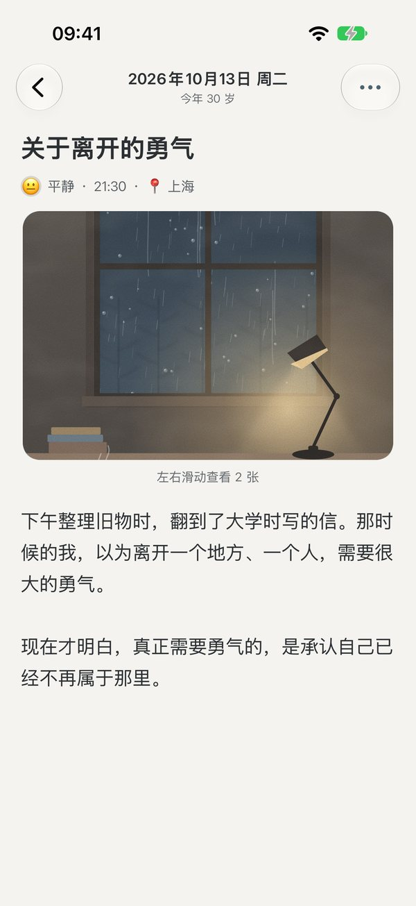
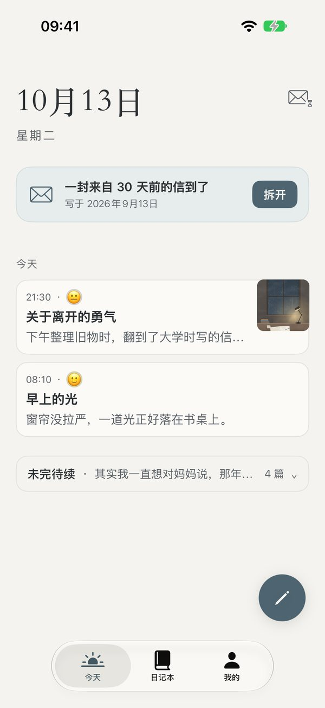
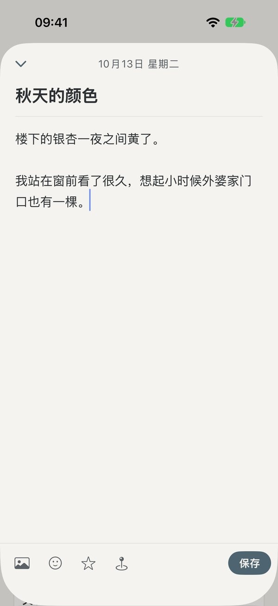
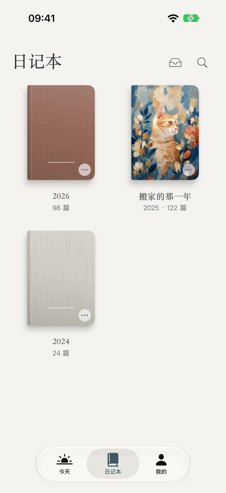
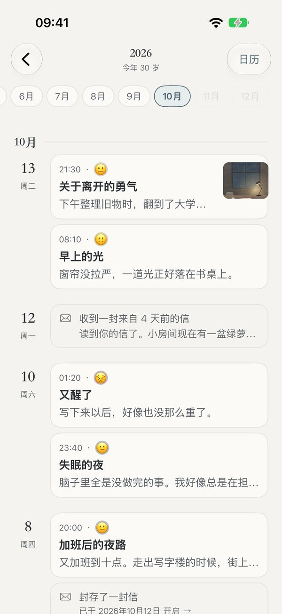
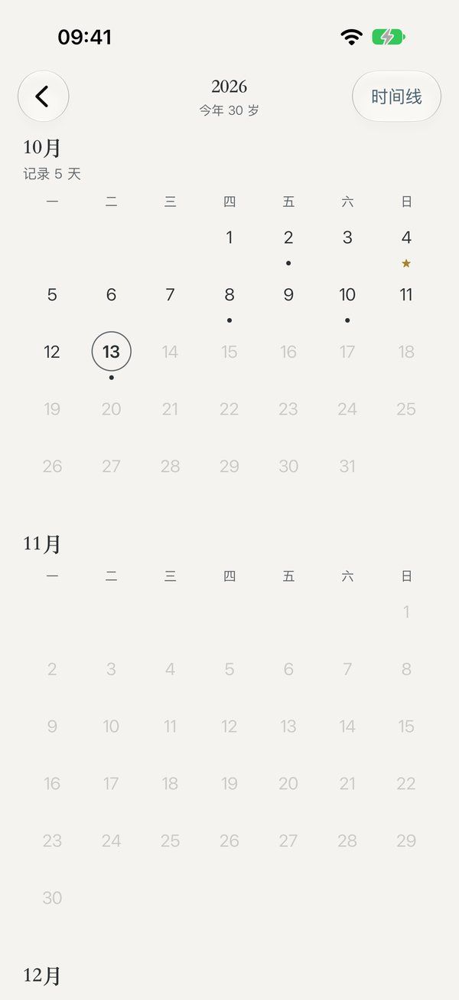
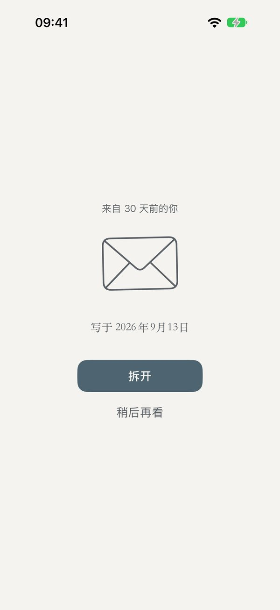
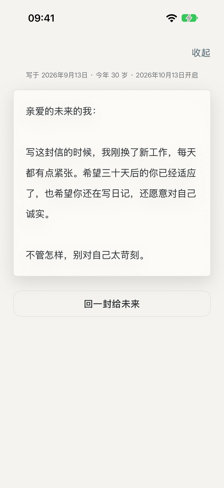
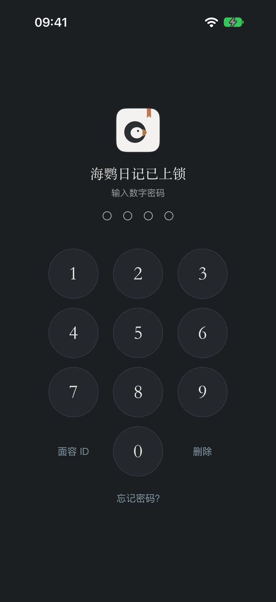

私密 · 安全 · 安静的日记本
安静地，
写下真实的自己
没有账号，没有打卡，也没有人在看。
你写下的每一个字，只保存在你的 iPhone 和你自己的 iCloud 里。
免费下载 · iPhone · iOS 17 及以上


安静地写
打开就能写
今天的日期、一句提示语，下面就是一页纸。心情、照片、所在的城市，想加就加；不想加，就只写几句话。没写完也不会丢，想写的时候再回来。

珍藏
一年，一本书
每一年的日记，自动收成一本书。改个书名，换一张封面，选一种喜欢的纸。几年以后，书架上就是你走过的日子。



每一年，都可以换一张喜欢的封面
回看
翻回某一天
按时间线一篇一篇往下读，或者在全年日历上点开某一天。想找哪一篇，搜一下就到。


时间胶囊
写给未来的自己
给未来的自己写一封信，选好哪一天打开。在那之前，信一直封着，谁也看不到；到了那一天，会轻轻提醒你。读完，还可以回一封，写给更远的未来。


安全、私密
只属于你
三把锁
应用锁、日记本锁、信箱锁，用面容 ID 或数字密码解开。
切走就遮住
切到后台时自动盖住屏幕，多任务界面里看不到你的日记。
没有服务器
日记只在你的 iPhone 和你自己的 iCloud 里，我们看不到任何内容。
不追踪你
不接入任何广告、统计和追踪工具，不记录你在 App 里做了什么。

随时可以带走
日记永远是你的
完整备份
公开的通用格式（.zip），换手机、换 App 都能完整恢复。
Markdown
每一篇导出成文字文件，任何地方都能打开。
PDF 精排
排成一本书的样子，可以打印成册。
从别处搬过来也很简单：支持 Markdown、文本和常见日记 App 的导出文件。
我们的承诺
- 我们看不到你的日记没有账号，没有服务器
- 不放广告，不卖数据也不追踪你在 App 里做了什么
- 日记永远是你的随时可以完整带走
- 不催促，不打卡隔了很久再回来，它还在